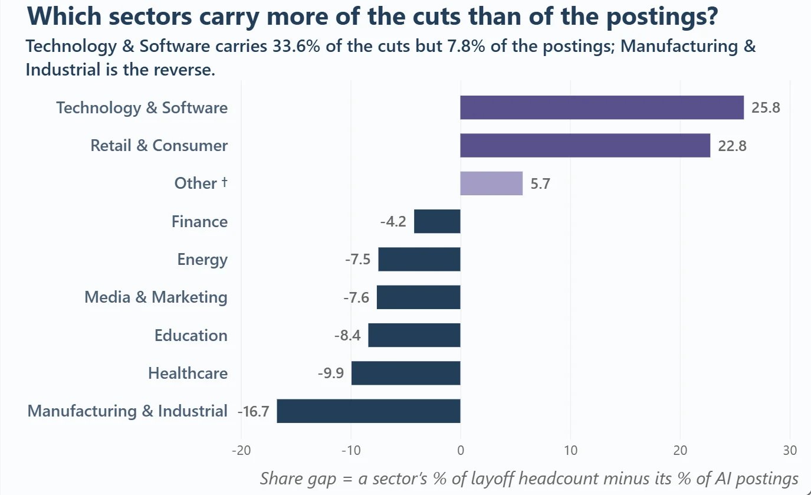

Chart 1 · Cuts against hiring
Which sectors carry more of the cuts than of the postings?
A sector's share of layoff headcount in the window minus its share of AI postings, in percentage points. Purple = more of the cuts; navy = more of the postings.
- Finding
Cuts and AI hiring diverge. Technology & Software holds 33.6% of the cuts but 7.8% of the postings; Manufacturing & Industrial is the reverse (−16.7 points). Combined, Technology and Retail carry 66% of the headcount but 17% of the postings (63% and 15.8% across all sectors).
- Note
- The postings sample covers AI roles only and its sector mix is nearly flat (7–17%), so the gaps partly reflect that design.